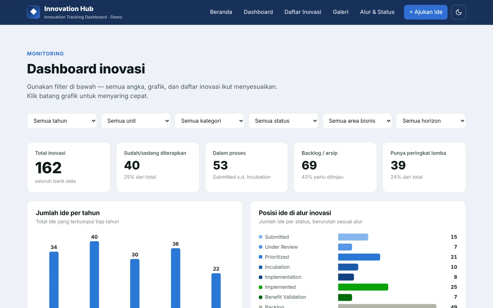
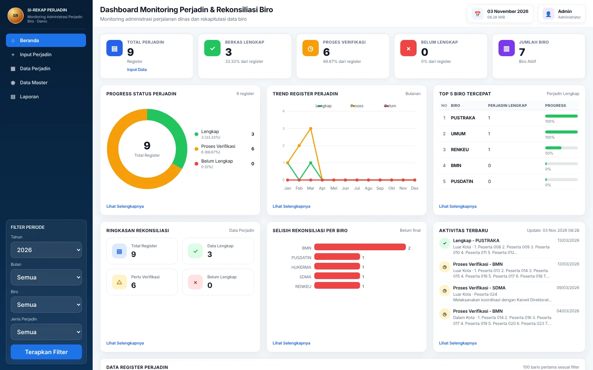

3Internships (SOE, ministry, Pertamina)
3.84GPA out of 4.00, UMY
583English Proficiency Test (EPT)
2Dashboard web apps built
2025 Economics graduate (International Class) with hands-on experience in RJPP monitoring, annual budget planning (RKA), financial analysis and industry outlook research. Proficient in Excel, Stata and EViews; builds Google Sheets + Apps Script dashboards.
Experience
Jun 2026 – Present
PT Pelindo Sinergi Lokaseva
Strategic Planning Intern · North Jakarta
- Monitored quarterly RJPP 2026 implementation, completing progress reports 50% faster; helped draft RJPP 2026–2030.
- Market and macroeconomic research for the Industry Outlook 2026, including an ARDL regression of exports.
- Comparative analysis of Terminal Kijing’s financial realization; BOD materials for ASEAN Port & Logistics 2026.
Nov 2025 – May 2026
Kementerian Imigrasi dan Pemasyarakatan
Finance & Budget Administration Intern · Bureau of Planning and Finance
- Organized 600+ financial records (+20% reporting efficiency); validated 200+ SPM, grant and travel documents.
- Supported the annual budget plan (RKA), +15% forecasting accuracy; reconciliation and annual reports 100% on time.
- Built SI-REKAP PERJADIN, replacing manual input that took 3–4 days for ~50 files. Completed with an “Excellent” rating.
May 2025
PT Pertamina Training & Consulting
Administrative Representative – Supply Chain Planning
- Monitored fuel distribution across 120+ locations in 8 regions in DELMIA Quintiq, with 95% data accuracy.
- Automated Excel & Google Sheets reports, increasing reporting efficiency by 60%.
2022 – 2024
Organization & volunteering
- Liaison Officer, ICOSI & ICIEFI 2024: coordinated 100+ participants, 90% positive feedback.
- Secretary, Entrepreneurship Division, HIMIE UMY: 50+ documents, 15 SOPs, 10+ events.
Projects & work samples
Live demo · Pelindo Sinergi Lokaseva · 2026
Innovation Hub Dashboard

Google Sheets + Apps Script web app that turns the company’s innovation data bank (453 ideas) into a live monitoring dashboard. Before: ideas were only collected during innovation competitions. After: any employee can submit ideas anytime, and managers can see which ones need follow-up.
Open the live demo ↗
Live demo · Kemenimipas · 2026
SI-REKAP PERJADIN – Travel Expense Recap System

Before: ~50 travel files took 3–4 days of manual input into Google Sheets. After: each file is entered once through a validated form; recap, document status per bureau and report update automatically. The prototype has been handed over to the ministry’s IT team for follow-up; time savings will be measured after rollout.
Open the live demo ↗
Work sample · Industry Outlook 2026
Port benchmark, vessel trends & ARDL regression
Top-10 global container port benchmark (all 10 run supporting logistics/FTZ zones); Java’s share of container port calls fell from 69% to 47%; ARDL bounds test (F = 6.783 > 4.428) shows the exchange rate and BI Rate both reduce exports in the long run.
Case study · Oct 2026
Investment Scheme Analysis — Profit Sharing vs Phantom Share
Excel financial model and recommendation deck for a Corporate Investment Staff skill test.
+41.7%Revenue growth in 3 years
72%Net profit absorbed by bank installments
12.3% vs 12.7%Investor IRR, nearly equal
Phantom shareCash Rp230–771 m higher
Skills
Strategy, finance & research
Strategic Planning (RJPP)Budget Planning (RKA)Financial ReportingFinancial ModellingMarket ResearchMacroeconomic AnalysisEconometrics (ARDL)Supply Chain Planning
Tools & languages
Microsoft ExcelStata & EViewsGoogle Sheets & Apps ScriptDELMIA QuintiqPowerPoint
Indonesian (native) · English — EPT 583
Education
Universitas Muhammadiyah Yogyakarta — Bachelor of Economics, International Class (2021 – 2025)
Selected certificates
- Corporate Finance — MySkill (2026)
- Financial Planning & Asset Management — CAMY (2026)
- Planning, Organizing & Controlling — CAMY (2026)
- Cargo Logistics Preparation Procedures — InJourney (2026)
- Mastering Supply Chain & Logistics — Alison (2026)
- BNSP Certificate of Competence — LSP UMY (2025)
- English Proficiency Test 583 — UMY (2025)
- Susenas Data Processing with STATA — UGM (2024)
- Microsoft Excel Training — FEB UMY (2024)
- MagangHub Internship — Kemnaker RI (2026)